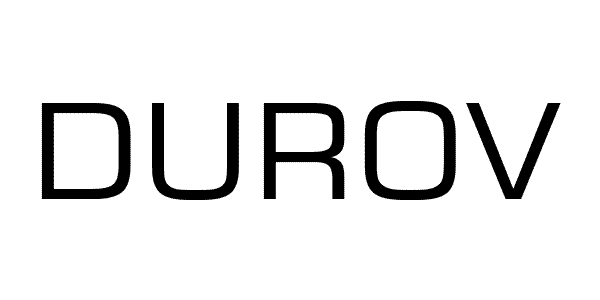

ТОРГОВАЯ МАРКА
Согласно Гражданскому кодексу Украины, торговая марка - (на украинском - торгова марка) - это любое обозначение или комбинация каких-то обозначений, способные отличать товары и услуги одних производителей от таких же самых или однородных товаров и услуг других производителей. Далее на сайте, во избежание путаницы в терминологии, мы просим Вас понимать, что под терминами: торгова марка, торговельна марка, товарный знак, знак для товаров и услуг, торговый знак, а также - ТМ следует понимать, что на страницах этого сайта речь идет о торговой марке. А само толкование специальной терминологии есть в нижней части этой страницы.
Как ЛЕГКО и БЫСТРО зарегистрировать торговую марку?
Позвоните 0987733353 или напишите в Telegram, Viber, или на info@tm.ua
Торговой маркой могут быть те обозначения, которые предусмотрены действующим украинским Законодательством.
а) Согласно Гражданскому кодексу Украины (Стаття 492. Торговельна марка), это:- 1. Слова, литеры, цифры (и их любые комбинации).
- 2. Изобразительные элементы (т.е. - картинки, изобразительные символы и их любые сочетания / комбинации).
- 3. Цвет и Комбинации (сочетания) цветов.
б) Далее действующий Закон Про охорону прав на знаки для товарів і послуг (сокращенно - Закон о Знаках) предусматривает (Стаття 5. Умови надання правової охорони) еще один вид знаков:
- 4. Имена собственные ( власні імена - в трактовке выше указанного Закона).
в) В свою очередь, действующие подзаконные Правила складання, подання та розгляду заявки на видачу свідоцтва України на знак для товарів і послуг предусматривают, кроме выше перечисленных, есть еще несколько видов знаков (1.4. Об'єктами правової охорони можуть бути такі знаки):
- 5. Объемные (трехмерные) знакив виде фигур или их композиций в трех измерениях (англ. - Three-Dimensional Mark)
- 6. Комбинации любых выше перечисленных символов и обозначений(это предусматривают и Кодекс, и Закон, и Правила). Часто такие обозначения называют цветовой знак.
- 7. Звуковые.
- 8. Световые.
г) Оговоримся, что в соответствии с Правилом З Инструкции (в редакции 2011 года) к действующему в Украине Сингапурскому договору (Сінгапурський договір про право товарних знаків та Правила до Сінгапурського договору про право товарних знаків із змінами від 01.11.2011) дополнительно предусмотрены следующие виды * знаков:
- 9. Голограммные знаки (англ. - Hologram Mark, укр. - голографічний знак).
- 10. Знаки движения (англ. - Motion Mark, укр. - Руховий знак). Их еще называют -
движущиеся знаки или изменяющиеся знаки, а также - анимационные знаки - 11. Мультимедийные знаки (англ. - Multimedia mark, укр. - Мультимедійний знак). Фактичеки это - те же самые движущиеся знаки, но кроме движения знак сопровождается и звуком (аудиорядом)
- 12. Позиционные (англ. - Position Mark, укр. - Позиційний знак).
д) Знаки, представляющие собой не-визуальные обозначения , но иные ** , чем звуковые (англ. - Mark Consisting of a Non-Visible Sign Other Than a Sound Mark). Под этими знаками имеются ввиду нетрадиционные невидимые знаки:
- 13. Обонятельные , т.е. знаки - запахи или ароматические знаки (англ. - Smell / olfactory marks, укр. - Нюховий знак).
- 14. Вкусовые (англ. - Taste marks, укр. - Смаковий знак).
- 15. Осязательные, еще их называют - Текстурные или Тактильные (англ. - Tactile marks, укр. - Нюховий знак).
*Заметим, что могут существовать и другие, в настоящее время еще не классифицированные знаки. Согласно Инструкции (Правил) к Сингапурскому договору предусмотрено, что возможны и другие виды нетрадиционных и не-визуальных обозначений.
** Согласно положениям Сингапурского договора "развивающиеся и наименее развитые страны" (к которым с 2006 года Укрпатент, видимо, отнесит и Украину) имеют право не регистрировать те знаки, которые Национальному ведомству этой развивающейся страны технически сложно или невозможно представить в отпечатанном виде (опубликовать типографским способом). Заявителям важно помнить, что официальая позиция Укрпатента такова, что до внесение соответствующих изменений в законодательство Украины голографическим, анимационным, позиционным, обонятельным и вкусовым знакам - не предоставляется правовая охрана в Украине. В связи с этим Заявки на такие обозначения не принимаются. Так это предусмотривают "МЕТОДИЧНІ РЕКОМЕНДАЦІЇ з окремих питань проведення експертизи заявки на знак для товарів і послуг" (это - документ Укрпатента, соращенно - Методические рекомендации УП) в п. 2.3. Дополнительно отметим, что изменяющиеся (анимированные) и позиционные ТМ в Украине часто заявляются как обычные комбинированные обозначения. Что и позволяет получить на них правовую охрану.
ВИДЫ торговых марок (товарных знаков):
• СЛОВЕСНЫЕ

Словесные знаки представляют собой буквы, слова и словосочетания, типографские (шрифтовые) символы, цифры в любом их сочетании. Например, "DUROV" - это словесный знак (укр. - словесна торгова марка). Написана она оригинальным шрифтом черного цвета. Зарегистрирована нами в 2009 году для основателя сервисов VKONTAKTE и TELEGRAM Павла Дурова, Свидетельство № 102621. Также словесным будет, например, знак "777". Этот знак зарегистрирован нами согласно Свидетельству № 94395 в 2008 году. Аналогично, словесным знаком будет и просто литера - "і" (зарегистрирована нами для сервиса i.ua) или сочетание символа "N", точки "." и цифры "1", т.е. "N.1." (Свидетельство № 196803). Эти примеры относятся к словесным ТМ и представляют собой реально зарегистрированные нами знаки наших Клиентов. Литеры словесных марок могут быть как в кириллице, так и в латинице. При этом словесные обозначения могут регистрироваться как цветными, так и черно-белыми. О том, нужен ли цвет торговой марке есть ниже на этой странице.
• ИЗОБРАЗИТЕЛЬНЫЕ

Изобразительные торговые марки состоят из графических элементов, сочетания цветов или их комбинаций. Очень часто изобразительные ТМ представляют собой некий символ: надкушенное яблоко у "Apple", трилистник у товарного знака "ADIDAS" и т.п. Изобразительные символы окружают нас со всех сторон. Это три полоски ADIDAS и трехлучевая звезда Mercedes, Полковник Сандерс у KFC и неутомимый Mr. Proper, все это - изобразительные символы. На примере слева - изобразительный знак, Свидетельство № 253111, зарегистрирована нами для Клиента Агентства в 2019 году. Как видите, он представляет собой некое изображение. Заявлен он на регистрацию с указанием цвета его элементов. Таким образом, изобразительный знак может защищать не только его собственно графическую часть, но и цвет этой графической части (или - этих графических частей). При этом вопрос о том, нужно ли заявлять такие графические обозначения в цвете или можно не укзывать цвет - это вопрос непростой. Чаще всего на такой вопрос дает ответ Предварительная проверка ТМ. Именно в результатх проверки можно найти сходные знаки. А уже из анализа сходных знаков решать, надо ли применять цвет, как дополнительный элемент отличительной способности заявляемого обозначения, или нет смысла идти на дополнительные затраты.
Посмотреть примеры Изобразительных знаков• ЦВЕТ ИЛИ КОМБИНАЦИИ (СОЧЕТАНИЯ) ЦВЕТОВ - ЦВЕТОВОЙ ЗНАК


Эти обозначения прежставляют собой указания конкретного цвета для конкретного товара или услуги. На примере слева - международная регистрация № 734422. Это типичный пример того, как защищается один цвет. Знак зарегистрирован по Мадридской системе в 2000 году для услуг 39 класса - "Услуги экспресс-доставки; хранение товаров; перевозка людей; услуги доставки почты, включая сбор, погрузку, транспортировку, отправку, разгрузку и доставку груза, товаров, посылок, почты, документов, ценных бумаг, журналов и периодических изданий; курьерская служба; перевозка грузов". И угадайте, кто владелец? Правильный ответ - компания "TNT Holdings B.V." из Нидерландов, всемирно известная служба экспресс-доставки TNT. Соответственно и регистрация охватывала Евросоюз, страны СНГ и т.п. А еще есть знаки, состоящие уже из сочетаний цветов. Такие ТМ защищают цвета или, правильнее, сочетания различных цветов. На примере справа - международная регистрация № 732143, владелец - компании Henkel KGaA. Это уже - типичный пример того, как защищается сочетания (комбинация) нескольких цветов (Color Mark). Также цветовые знаки (защита цвета или комбинаций цветов) весьма характерны для автозаправок. Вспомните, например, зеленый цвет у заправок "BP", или желтый - у автозаправок "Шелл", а оранжевый - у "Лукойл". Ярким примером графического объекта, который представляет собой сочетание белого и красного цвета является фирменный бело-красный прямоугольник одежды марки Hilfiger. И для одежды это сочетание белого и красного отождествляется уже с определенным брендом и производителем.
• ИМЕНА СОБСТВЕННЫЕ


Эти обозначения представляют собой указание Имени, Фамилии, а иногда - и Отчества конкретного человека. Пнятно, что в части указания имени собственного - эти ТМ представляют собой обычные словесные знаки. Зачем законодатель в Законе о знаках выделил такие обозначения - остается загадкой. Пример словесного обозначения, которое представлено выше (DUROV), это - английская транслитерация фамилии основателя кроссплатформенного мессенджера Telegram - Павла Дурова, зарегистрированная нами в Украине. Заметим, что в качестве таких брендов часто заявляют и псевдонимы. Например - для артистов театра и кино, это - театральные псевдонимы. А у певцов, исполнителей и т.п., это уже - музыкальные псевдонимы. Часто бывают в нашей практике и писательские псевдонимы. Точно так же такие обозначения регистрируются для конкретного товара или услуги. На примере справа - наиболее простой вариант знака, представляющего собой имя собственное. Подыскивая типичный пример такого знака, мы решили выяснить: а кто из Президентов Украины решил увековечить свое имя собственное в бренде? Как оказалось, единственный Президент Украины, который считает свое имя собственное брендом - это Виктор Ющенко. Поэтому этот знак, зарегистрированный в Украине согласно Свидетельству № 23284, мы и представляем слева как простейший пример такого обозначения. Но заметим, что эти знаки могут быть весьма и весьма оригинальными. На примере слева - очень интересное обозначение! Это - знак для товаров и услуг, зарегистрированный в Украине согласно Свидетельству № 210787. Это уже - пример творчества в защите своего Имени. И не только его! Этот знак защищает и ФИО Заявителя, которые есть в знаке - Митропан Сергей Николаевич. И - его номер мобильного телефона. И даже - фото владельца бренда! Браво творчеству Заявителей! Правда, что почему в знаке название города "Кременчуг" не исключено из правовой охраны (дискламация, код 526), это уже - вопрос к "творчеству" эксперта Укрпатента! :)
• ОБЪЕМНЫЕ

Объемные знаки - это чаще всего или упаковка, или тара, емкость или бутылка для товаров компании. Это особая группа знаков. Объемные торговые марки чаще всего регистрируются те трехмерные, пространственно особенные объекты, по которым потребители узнают товары этого производителя. Эти знаки регистрируются в виде трехмерных фигур, обладающих индивидуальными особенностями в трех измерениях. Чаще всего такими знаками выступает упаковка товара (те же коробки) или тара (емкости для товаров). Естественно, что и регистрируются такие товарные знаки в виде композиций трехмерных фигур. И на регистрацию в заявке подаются такие знаки тоже с изображениями в трех измерениях. С нашей точки зрения, регистрация объемных ТМ имеет и некоторые недостатки в охране прав и доказывании нарушения. Напомним, что для того, чтобы защищать оригинальную форму и / или раскраску товара существует такой объект права интеллектуальной собственности как промышленный образец. Патент на промышленный образец как раз и защищает форму и раскраску. На картинке слева представлена торговая марка Европейского сообщества (European Union Trade Mark) компании "Diageo Brands B.V.". Это - бутылка всемирно известного алкогольного напитка - джина Tanqueray. Trade mark number - 005100219.
Наглядным примером того, что далеко не всегда правильно трехмерные объекты регистрировать в качестве торговой марки служит отмена регистрации в Украине международной торговой марки № 798984 (изображение конфеты "Raffaello" ). Но мало того, что отменили регистрацию, так еще бельгийская компания "Соремартек С.А." в результате этого проиграла важный для нее судебный процесс. И причина проигрыша - из-за неправильного выбора способа регистрации объекта своих прав интеллектуальной собственности.
У нас на сайте Вы можете также посмотреть примеры товарных знаков для бутылки.
• КОМБИНИРОВАННЫЕ

Эти знаки могут состоять из любых сочетаний выше перечисленных знаков. Они могут, например, состоять как из слова или словосочетания и изобразительного элемента. Или, напрмер, из литер, цифр и дополнительно - включать в себя изобразительные элементы. Т.е. само название этого типа обозначений - говорит об их комбинированном составе. На примере слева - ТМ "BALKAN WATER". Это - классический комбинированный знак. Он представляет собой этикетку на бутылку напитка. Состоит это обозначение из двух частей: словесной и изобразительной. Словесная часть знака на примере - "BALKAN WATER eurodrinks bw". Также в составе этого знака есть и изобразительная часть - графические элементы. Они представляют собой стилизованное изображение гор.
Кроме того, отличительной частью этой ТМ является то, что она зарегистрирована в цвете. Первое, что бросается в глаза - это сочетание красного и синего цвета. Это - доминирующие цвета этикетки. Но там еще есть и другие цвета: голубой и белый, на которые Заявители часто не обращают внимание. А это - отдельные цвета. Таким образом эта ТМ зарегистрирована в синем, красном, голубом и белом цветах. На стоимость регистрации количество вариантов того или иного цвета никак не влияет. Влияет на стоимость регистрации ТМ то, что вообще есть какой-то цвет. При этом под цветом понимается любой цвет, кроме оттенков черного. Т.е. если в знаке 2-3-5 или 10 цветов и оттенков - он цветной (в цвете). И зарегистрировать его сразу станет дороже на размер госсборов за цвет. Итак, если в знаке есть любой цвет кроме черного, это - плюс 1000 грн госсбора при подаче Заявки. И еще плюс 200 грн госсбора дополнительно за публикацию цветного изображения знака (платится уже при выдаче Свидетельства).
В качестве комбинированных ТМ часто регистрируют логотип компании. Регистрация логотипа как торговой марки - это классический способ защитить бизнес-идентификаторы предприятия. В этом случае фиксируются права на именно то, что Потребители и Клиенты чаще всего видят на этикетке, на фирменных визитках, на вывесках и т.п.. Именно логотип - это самый важный визуально-смысловой символ этой компании. Он отличает это юрлицо от других юрлиц. И вот его лучше всего и зарегистрировать. Но при регистрации лого надо иметь ввиду, что если в нем есть визуально сильный графический символ, то возможно, что лучше будет зарегистрировать две ТМ. Одну - как комбинированную, а вторую - как изобразительную. Оговоримся, что если в логотипе присутствует и слоган (девиз) Компании, то он может быть и третьим обозначением, рекомендуемым к регистрации.
• ЗВУКОВЫЕ И МЫЗЫКАЛЬНЫЕ ТОРГОВЫЕ МАРКИ

Эти нетрадиционные знаки представляют собой звуки (ангд. - Soud Mark). Звуки могут быть разные. От звука открывания зажигалки ZIPPO и рычания мотора Harley-Davidson (которому, кстати, отказали в регистрации в США), и т.п. И это все ранее упомянутое - оригинальные звуки. Они - для Его Величества Потребителя, точно так же как и другие виды знаков, отождествляют конкретный товар или услугу и конкретного их производителя. Фактически такие знаки - это аналоги звукового логотипа. Иногда их называют и другими терминами: аудио-бренд, музыкальный бренд, звуковой бренд, акустический бренд. Интересны примеры описаний, которые приводит WIPO (Всемирная организация интеллектуальной собственности) в качестве образцов описания Звуковых знаков: Пример 1: ТМ представляет собой звуки быстрых повторяющихся постукиваний деревянной палки по металлической крышке мусорного бака, которые постепенно становятся громче в течение примерно 10 секунд. Пример 2: ТМ представляет собой звуки двух шагов, сделанных коровой на асфальте, которые сопровождаются звуком мычания коровы. который и воспроизводится в записи, прилагаемой к Заявке. Но звуки же все разные, но они - могут быть и музыкой. Таким образом, музыкальные ТМ - это один из вариантов звукового знака (сокращенно - ЗЗ). И так как музыка может быть очень разной, то потому и музыкальные знаки вполне пригодны и достаточны для того, чтобы выполнять основную функцию знаков - отличать. Особенностью реалий Украины является то, что согласно статьи 12 выше упомянутого Закона о Знаках предусмотрено, что должна осуществляться публикация информации о знаке ("здійснюється публікація в офіційному бюлетені відомостей про видачу свідоцтва"). А официальный Бюллетень - бумажный. Из этого следует то, что в Украине есть возможность зарегистрировать только такой ЗЗ, который можно воспроизвести полиграфическим способом. А именно: представить его в виде музыкальных нот (записи нот на нотном стане). Что, в свою очередь, ведет к тому, что в Украине возможно зарегистрировать только музыкальные знаки (сокращенно - МузЗнак). На примере слева вверху - зарегистрированная ТМ, владелец - Публічне акціонерне товариство "Національна суспільна телерадіокомпанія України", Свидетельство № 47274. Знак зарегистрирован для услуг 35, 38 и 41 классов МКТУ (Международной классификации товаров и услуг) еще в далеком 2005 году. Как можно видеть на примере, этот МузЗнак зарегистрирован в виде нотного ряда (записи нот на нотном стане). Т может как включать слова (словесную часть звукового знака), так и быть без нее (как на примере слева). Отдельно был приложен звуковой файл. А вот ниже - мы представляем еще один музыкальный знак. Его Владелец - "Запорізька незалежна телерадіокомпанія «ТВ-5»". И этот МузЗнак уже включает в себя как звуки музыки, так и слова. Файл внизу можно прослушать. Также этот МузЗнак зарегистрирован и в виде записи нот на нотном стане. Как видно из примеров, музыкальные бренды вполне имеют право на существование.